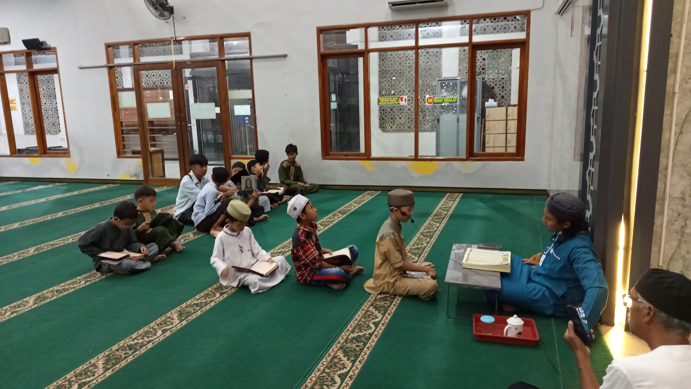
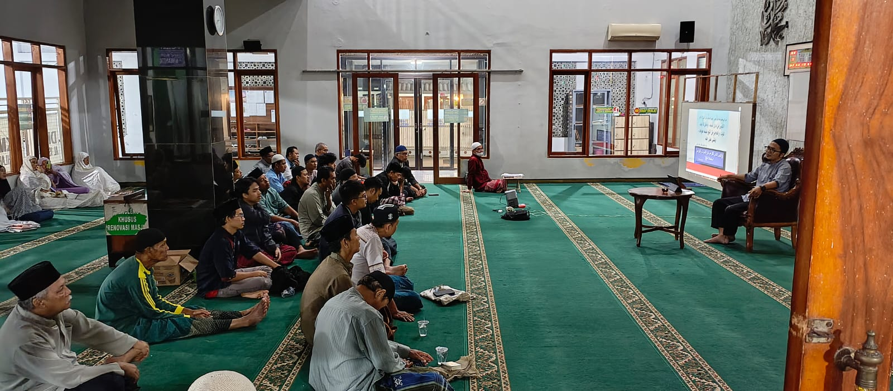

Bidang ZIS
Zakat, Infaq, dan Shodaqoh - Mengelola zakat yang ada di Masjid Al-Ishlah secara amanah dan transparan.
Pelajari Lebih LanjutMenyatukan umat melalui pendidikan kreatif, kegiatan sosial, dan program keagamaan yang bermakna.

Berbagai program yang kami selenggarakan untuk kemaslahatan umat dengan pendekatan kreatif dan bermakna.
Zakat, Infaq, dan Shodaqoh - Mengelola zakat yang ada di Masjid Al-Ishlah secara amanah dan transparan.
Pelajari Lebih LanjutBeras Perelek, Sembako bagi jemaah sakit, dan Beras Bersubsidi untuk mendukung kesejahteraan bersama.
Pelajari Lebih LanjutPendidikan Formal KOBER/PAUD & DTA, serta Non-Formal Maghrib Mengaji dan Tahsin jama'ah.
Pelajari Lebih Lanjut"Menjadi pusat dakwah dan pendidikan serta mengabdi kepada jamaah - umat."
Masjid menjadi bagian dari solusi bagi jema'ah/ umat
Masjid menjadi tempat yang nyaman untuk menimba dan meningkatkan kebutuhan ubudiyah
Masjid menjadi tempat rujukan persoalan sosial / kemasyarakatan

Program tahfidz Al-Qur'an untuk anak-anak dan remaja telah dibuka. Segera daftarkan diri Anda untuk meraih keberkahan...
Baca Selengkapnya
Kajian bulanan dengan tema pentingnya menjaga persaudaraan dalam Islam. Terbuka untuk umum setiap malam Ahad...
Baca Selengkapnya
Pendistribusian bantuan beras untuk keluarga yang membutuhkan telah dilaksanakan dengan baik untuk jemaah Al-Ishlah...
Baca SelengkapnyaMasjid Al-Ishlah berlokasi di area yang mudah diakses, memberikan kenyamanan bagi jamaah untuk beribadah dan mengikuti berbagai kegiatan pendidikan.
Komplek Soreang Indah Blok J1, Cingcin, Soreang, Kabupaten Bandung, Jawa Barat 40921
+62 823-8538-7709 (DKM)